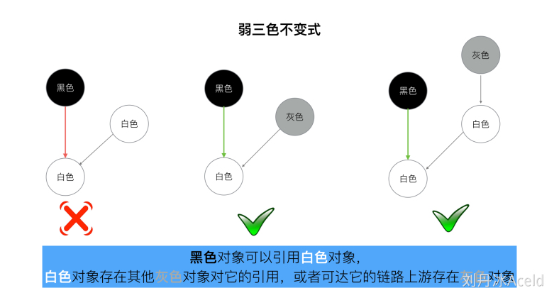
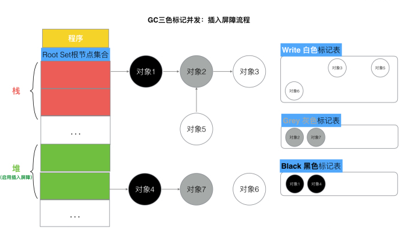

“强-弱” 三色不变式
强三色不变式
强制性的不允许黑色对象引用白色对象，这样就不会出现有白色对象被误删的情况。
弱三色不变式
所有被黑色对象引用的白色对象都处于灰色保护状态。
为了遵循上述的两个方式，GC算法演进到两种屏障方式，他们“插入屏障”, “删除屏障”。
插入屏障
具体操作: 在A对象引用B对象的时候，B对象被标记为灰色
满足: 强三色不变式
黑色对象的内存槽有两种位置, 栈和堆. 栈空间的特点是容量小,但是要求相应速度快,因为函数调用弹出频繁使用, 所以“插入屏障”机制,在栈空间的对象操作中不使用. 而仅仅使用在堆空间对象的操作中
但是如果栈不添加,当全部三色标记扫描之后,栈上有可能依然存在白色对象被引用的情况(如上图的对象9). 所以要对栈重新进行三色标记扫描, 但这次为了对象不丢失, 要对本次标记扫描启动STW暂停. 直到栈空间的三色标记结束
删除屏障
具体操作: 被删除的对象，如果自身为灰色或者白色，那么被标记为灰色。
满足: 弱三色不变式
混合写屏障
1、GC开始将栈上的对象全部扫描并标记为黑色(之后不再进行第二次重复扫描，无需STW)，
2、GC期间，任何在栈上创建的新对象，均为黑色。
3、被删除的对象标记为灰色。
4、被添加的对象标记为灰色。
总结
GoV1.3- 普通标记清除法，整体过程需要启动STW，效率极低。
GoV1.5- 三色标记法， 堆空间启动写屏障，栈空间不启动，全部扫描之后，需要重新扫描一次栈(需要STW)，效率普通
GoV1.8-三色标记法，混合写屏障机制， 栈空间不启动，堆空间启动。整个过程几乎不需要STW，效率较高。